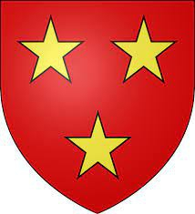

Antavla
96142668 Lord Walter de Moravia
Lord av Petyn.

Far:
William de Moravia (- 1226)
Död:
1244.
[1]
Barn med ?
Barn:
William de Moray of Bothwell (1200? - 1253?)
Personhistoria
Årtal
Ålder
Händelse
1200?
Sonen
48071334 Lord William de Moray of Bothwell
föds omkring 1200 Bothwell Castle, Lanarkshire, Scotland
[2]
1220
Barnbarnet
24035667 Margaret Moray of Bothwell
föds 1220 Lanarkshire, Scotland
[2]
1226
Fadern
192285336 Lord William de Moravia
dör 1226
[1]
1244
Död 1244
[1]
Källor
[1]
Heraldry of the Murrays
[2]
wikitree